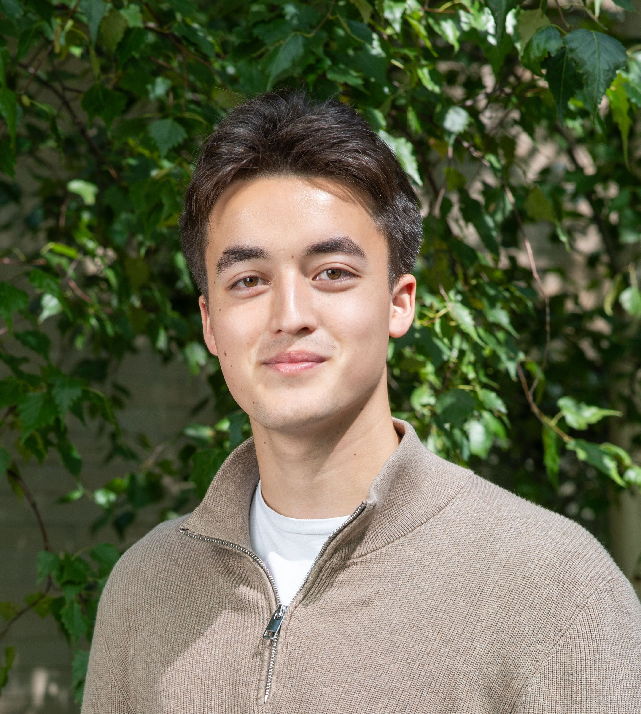

I'm Jarett Dewbury, a third-year undergraduate studying Biomedical Engineering at the University of Waterloo.
I'm interested in the intersection of medicine and machine learning, particularly in enhancing diagnostic capabilities and decision-making. My current research focuses on developing transformative AI-enabled tools
tailored for use in low-resource settings. This involves creating robust multimodal models that can operate efficiently with minimal data and computational resources. By leveraging these advanced techniques,
I aim to contribute to the development of accessible and accurate diagnostic solutions that can have a significant impact on global healthcare.
Currently, I'm a visiting researcher at Massachusetts Institute of Technology with Loza Tadesse working on machine learning for low-resource diagnostics. I'm also the co-founder of
WAT.ai, the University of Waterloo's artificial intelligence student design team. Previously, I was a machine learning researcher at Harvard Medical School
and Massachusetts General Hospital working with OCT images for on-device segmentation applications.
I'm grateful to be supported by the Emergent Ventures Fellowship.
I enjoy staying active in the gym and engaging in a variety of sports and outdoor activities. Before attending university, I spent a large amount of my early life playing junior
hockey and pursuing my athletic goals.
If you share similar interests or are seeking guidance in your own academic or professional endeavors, feel free to reach out to me!
Email 〳 Twitter 〳 Github 〳 LinkedIn 〳 Google Scholar